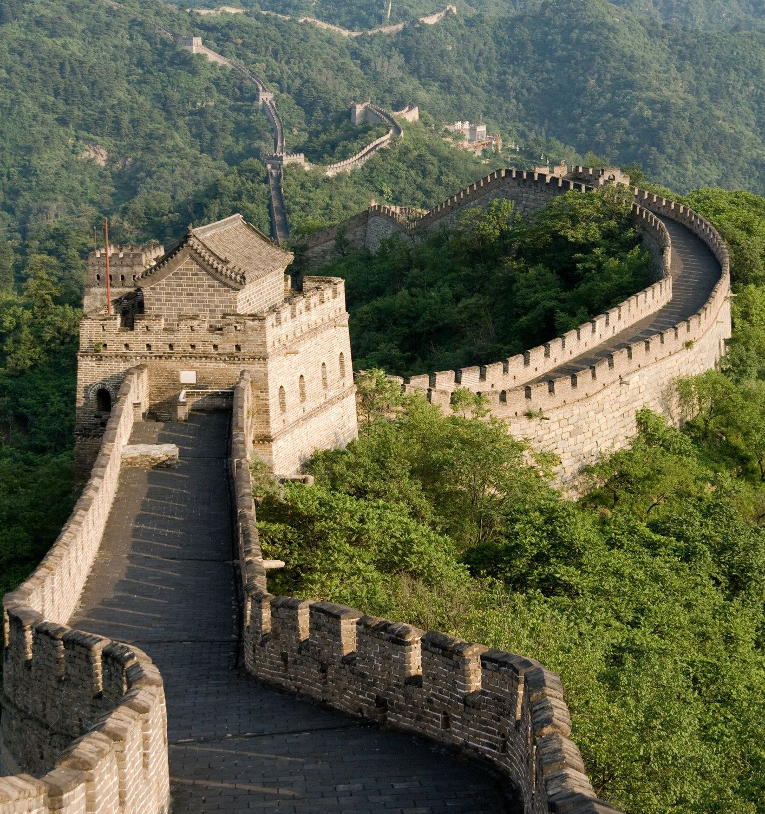
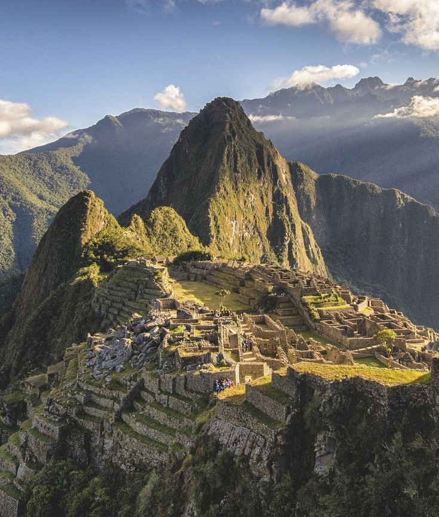
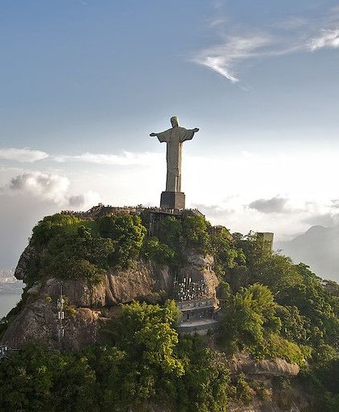

| WONDER | LOCATION | IMAGE | YEAR |
|---|---|---|---|
| Great Wall of China | China |  | 700 BC |
| Petra | Ma'an, Jordan | 312 BC | |
| Colosseum | Rome, Italy | AD 80 | |
| Chichen Itza | Yucatan, Mexico | AD 600 | |
| Machu Picchu | Cuzco Region, Peru |  | AD 1450 |
| Taj Mahal | Agra, India | |
AD 1643 |
| Christ the Redeemer | Rio de Janeiro, Brazil |  | AD 1931 |